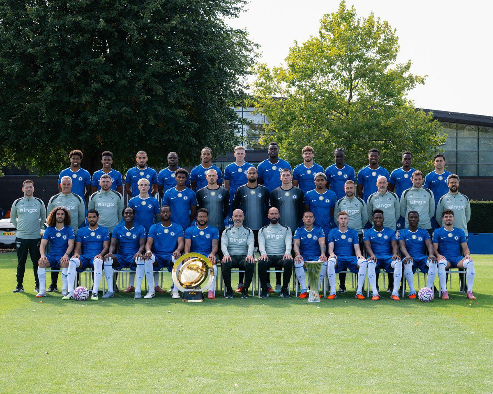
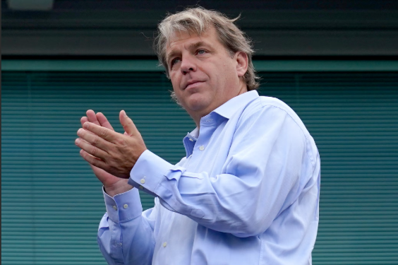

<title>Chelsea Football club</title>
<article>
  <header>Author: Abdul-Raqeeb Olaleye</header>
  <h1>Chelsea Football Club</h1>
  <main>
    <h2>My passion</h2>
    <p>
      I love Chelsea Football Club with all my heart. Supporting Chelsea isn’t
      just about watching matches for me, it’s about being part of something
      special. From the moment I started following the team, I was drawn to
      their fighting spirit, their history, and the passion that connects every
      fan around the world. No matter the ups and downs, I always stay loyal
      because true fans stick with their club through everything. Every goal,
      every victory, and even every tough loss reminds me why I’m proud to be a
      Chelsea supporter. The atmosphere, the players, and the blue pride make it
      feel like a family I’ll always belong to. I don’t just watch Chelsea, I
      live and breathe Chelsea.
    </p>
    <h2>Chelsea squad</h2>
    
    <p>
      I love Chelsea Football Club with all my heart, and I’m proud to be one of
      their biggest fans. Watching the current Chelsea squad play fills me with
      excitement and hope for the future. The team has so much young talent and
      potential, players like Cole Palmer, Enzo Fernández, Moisés Caicedo, and
      Reece James bring energy, skill, and passion every time they step onto the
      pitch. I also admire how experienced players help guide the younger ones,
      creating a strong balance in the squad. Even when results don’t always go
      our way, I believe in this team and the project they’re building.
      Chelsea’s spirit, determination, and never-give-up attitude remind me why
      I fell in love with the club in the first place. Whether it’s a Champions
      League night at Stamford Bridge or a tough Premier League battle, I’ll
      always stand by the Blues through every victory and every challenge. Once
      a Blue, always a Blue.
    </p>

    <h2>Chelsea History</h2>
    
    <p>
      I love Chelsea Football Club deeply, not just for the way they play but
      for the incredible history that comes with the Blue badge. Chelsea was
      founded in 1905 at Stamford Bridge in London, and since then, the club has
      grown into one of the biggest names in world football. Over the years,
      Chelsea has built a legacy of passion, strength, and ambition, winning
      major trophies like the Premier League, FA Cup, and the UEFA Champions
      League. I’m proud of how the club has evolved through different eras, from
      the early days of legends like Peter Osgood and Gianfranco Zola to modern
      heroes like Didier Drogba, Frank Lampard, and John Terry. The ownership
      has also shaped Chelsea’s journey in big ways. Roman Abramovich’s era,
      which began in 2003, brought massive success and global recognition, while
      today the club is owned by Todd Boehly and the Clearlake Capital group,
      who are continuing to invest in a bright future for the team. Through
      every change and challenge, my love for Chelsea stays the same. Being a
      Chelsea fan isn’t just about football, it’s about pride, loyalty, and
      believing in the Blue legacy that keeps growing stronger every season.
    </p>
  </main>
</article>
 <footer>Abdul-Raqeeb Olaleye, 2025.</footer>
